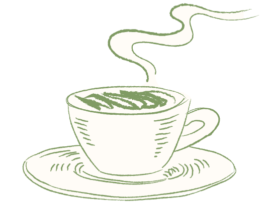
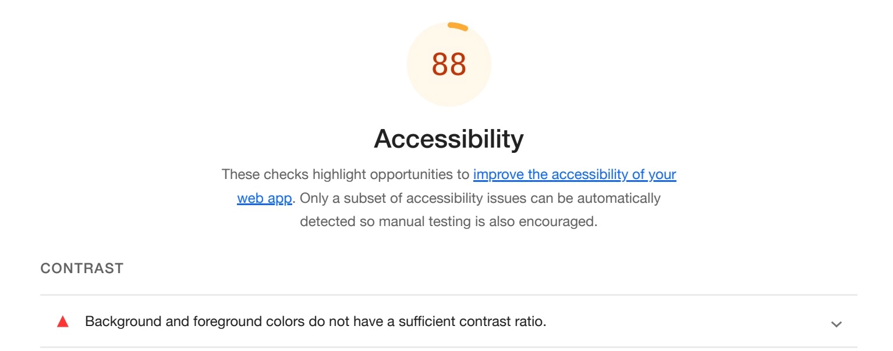

I modsætning til de andre temaer på dette semester, har vi arbejdet i grupper. Gruppearbejdet endte ud i et redesign af Café Kafs website, samt produktion af videoindhold både til deres hjemmeside men også en kvadratisk udgave til sociale medier.

En af de færdigheder jeg lærte under dette tema var brug af custom properties i CSS. Custom properties er egendefinerede værdier, hvor det er muligt at referere til dem andre steder i filen. Dette gør det nemmere at ændre for eksempel fonte og farver og tilpasse dem
efter behov.
Vi valgte i gruppen at strukturere vores arbejde ved hjælp af en udgave af SCRUM, der er en praktisk måde at holde overblik og fordele opgaver blandt gruppens medlemmer. SCRUM boarded viste sig at være en god måde at sørge for at alle opgaver blev fordelt ligeligt
ud alle og samtidig at de blev lavet til tiden.
Brugen af custom properties kom os til gode, da vi efter at have lavet en Lighthouse test på vores side, fandt ud af, at kontrasten mellem baggrundsfarven og link farven ikke var stor nok. Ved at have brugt custom properties var det nemt at ændre farven på linket, da alternativet kunne have været at vi skulle lede efter farven alle de steder, vi havde brugt den i koden, og derved minimerer dobbeltarbejde. En anden god brug af custom properties kunne være at cafeen eksempelvis ville have en anden farve på brødteksten. Dette ville også være let at ændre, da det kun ville være selve property'en der skulle ændres.
